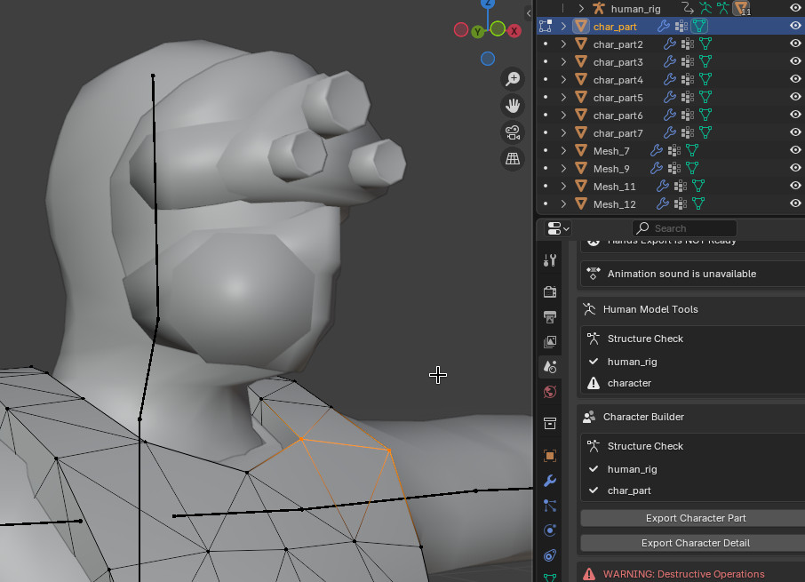

Module: human_model
Documentation last edited: October 23, 2025 at 14:33 UTC
Description
Это монстр. Ладно. Класс, который заставляет людей выглядеть как что-то в этой игре. Это всё, что тебе нужно знать об этом модуле. Он используется NPC для отображения человеческой внешности.

Как работать с этим в качестве художника
Предположим, ты просто парень, который хочет добавить человеческого персонажа в эту игру.


Итак, чтобы сделать здесь некоторую алхимическую магию, тебе просто нужно следовать следующим шаблонам и выполнить следующие действия:
- Убедись, что у тебя есть следующая структура в Blender:
└── human_rig
└── character
Где:
-
"human_rig"
- это скелет персонажа. Если тебе нужно получить скелет для своих нужд, он хранится в файле
"res://.dev_sources/basic/human_rig.blend"
.
Однако ты также можешь просто импортировать модель из Character Builder для этого.
- Меш
"character"
должен быть привязан к
"human_rig"
.
Структура персонажа
└── human_rig # Скелет персонажа, сохраняй его неизменным и переиспользуй уже существующий арматур в Blender
└── character # Основной меш персонажа
└── character_LOD # LOD-меш персонажа (низкая детализация), который показывается на определённом расстоянии от камеры
Затем ты просто используешь BlenderFastTools для экспорта своей человеческой модели, нажав
"Export Character"
в разделе
"Human Model Tools"
. Прежде чем нажать эту кнопку, убедись, что ты сохранил свой .blend файл с подходящим именем персонажа, которого хочешь экспортировать. Настоятельно рекомендуется хранить все модели человеческих персонажей в
"res://.dev_sources/human_models/"
. Как только ты сохранил свой файл, ты можешь нажать "Export character", что автоматически экспортирует соответствующий GLTF файл в
"res://modules/human_model/assets/models/
[CHARACTER_NAME_HERE]
"
.
После экспорта персонажа из Blender убедись, что посетил эту папку в Godot, чтобы импортировать модели и настроить материалы, назначив им правильные значения и текстуры во всех слотах.

По умолчанию Godot импортирует материалы
SpatialMaterial
вместо
UserSpatialUbershader
, которые используются для всех материалов в этой игре. Во-первых - тебе нужно заменить
SpatialMaterial
на
UserSpatialUbershader
. Ты можешь просто удалить файл, создать новый ресурс (с тем же именем, заметь) и тогда всё будет круто. Однако это может быть слишком медленно, так что я хотел бы показать более лёгкий метод. Сначала скопируй путь к папке...

Затем открой меню
OtherKit
...

Кликни здесь несколько раз...

Найди вкладку "Material Replace", введи путь к папке, нажми "Replace"

Хотя это может показаться более сложным, чем делать это по-старинке, я лично нашёл это быстрее, потому что окно "Create a new resource" в этом проекте работает медленно, плюс я слишком ленив, чтобы правильно сохранять ресурс, тогда как этот инструмент помогает обнаружить любой
SpatialMaterial
и заменить их соответственно. Однако вернёмся к конфигурации. Когда ты получил в свои руки новый
UserSpatialUbershader
, тебе нужно включить эффекты... Также убедись, что изменил
Diffuse Mode
на
"Burley"
и
Specular Mode
на
"Schlick GGX"
...


Для большинства персонажей тебе понадобятся эффекты
Albedo
,
Normal Map
,
MRS
. Иногда -
Emission
. Все эти эффекты будут более чем достаточными, чтобы сделать по-сути приличных персонажей любой сложности. После того как ты закончил включать эффекты, нажми
Force Update
, чтобы обновить шейдер в этом материале в соответствии с требованиями рендерера.

После того как ты обновил материал, ты можешь назначить текстуры в слоты. Имей в виду - изначально твой материал будет полностью чёрным, так что не забудь изменить
Albedo Color
на белый. Более того,
Normal Map Power
по умолчанию равен
0.0
, убедись, что изменил значение на
1.0
, чтобы normal map оказывал полное влияние на освещение этого материала. После всего этого - мистер Shitass0 должен выглядеть свежо и чисто.

Структура скриптов
.
├── autoload
│ ├── human_model_file_archive.gd
│ └── ragdoll_list.gd
├── config
│ ├── footstep_anim_footmark.gd
│ ├── footstep_anim_mark.gd
│ ├── footstep_marks.gd
│ └── weapon_config.gd
├── helper
│ ├── anim_event_caller.gd
│ └── ragdoll_logic.gd
├── human_model.gd
└── test
└── walker_control.gd
Сердце всего этого модуля -
"human_model.gd"
, который является классом
HumanModel
, который *ты должен использовать*. Это конец линии. Закрой страницу документации, это всё, что тебе нужно знать... Шучу, я думаю, мне также нужно написать, как использовать этот класс.
Другие файлы:
-
"autoload/human_model_file_archive.gd"
- это синглтон
HumanModelFileArchive
, который управляет некоторыми вещами, связанными с файлами анимаций и материалов.
-
"autoload/ragdoll_list.gd"
- это общий список всех рэгдоллов, управляет некоторой логикой там тоже, это класс
RagdollList
.
-
"config/footstep_anim_footmark.gd"
- это ресурс-конфиг
HumanModelFootMark
, который имеет только 2 переменные: кадры подъёма и опускания. Этот класс используется в классе
HumanModelFootstepAnimMark
.
-
"config/footstep_anim_mark.gd"
- это упомянутый класс
HumanModelFootstepAnimMark
, который содержит 2 массива
HumanModelFootMark
для обеих ног. Он также привязан к конкретной анимации.
-
"config/footstep_marks.gd"
- это просто класс
HumanModelFootstepMarks
, который содержит массив
HumanModelFootstepAnimMark
, который позже загружается
HumanModel
для отметки событий шагов по ряду причин, таких как правильно синхронизированные звуки шагов и заброшенный "Foot IK", которого никто не должен касаться никогда.
-
"config/weapon_config.gd"
настраивает оружие, используемое
HumanModel
, это ресурс
HumanWeaponConfig
.
-
"helper/anim_event_caller.gd"
- это хак, который я написал с любовью, страстью и чистой ненавистью, просто чтобы получить вызов
animation_event_occured
в
HumanModel
.
-
"helper/ragdoll_logic.gd"
- это скрипт для логики рэгдолла, который обрабатывает заморозку костей, контроль их времени жизни, удаление и т.д.
-
"test/walker_control.gd"
мы не говорим об этом. Я никогда не буду говорить об этом. Ты не хочешь знать об этом.
Сцены:
-
"assets/ragdoll/ragdoll_model_v2.tscn"
- сцена рэгдолла, которая используется для экземпляров рэгдоллов
HumanModel
.
-
"assets/hitbox/hitbox.tscn"
- сцена хитбокса, которая используется для инстанциирования структуры хитбоксов
HumanModel
, имей в виду, что остальная часть инициализации хитбоксов (настройка
KinematicBody
) может происходить в коде функции инициализации хитбоксов в
HumanModel
.
NPCHuman
делает свои собственные регулировки к инициализации хитбоксов, имей это в виду.
Как ты должен использовать HumanModel в коде?
# 1. СОЗДАЙ контейнер модели с регулировкой высоты
# - Добавь узел Spatial как "model_tweak"
# - Настрой позицию Y на "MODEL_TWEAK_HEIGHT" (в сценарии NPC это "0.0" LOL)
var model_tweak = Spatial.new()
add_child(model_tweak)
# 2. СОЗДАЙ новый экземпляр "HumanModel"
# - Установи ссылку "scene_root" на LocationBase
var humanoid = HumanModel.new()
humanoid.scene_root = LocationBaseScene.get_scene()
# 3. НАСТРОЙ параметры модели
# - Добавь "self" ("KinematicBody" в этом случае) в список исключений (Я не знаю, зачем это нужно, просто сделай это)
humanoid.exclude.append(self)
# 4. ЗАГРУЗИ модель персонажа
# - Выбери имя модели (например, "merc_light_unit0")
# - Вызови HumanModel.load_character() с именем модели и контейнером
humanoid.load_character("merc_light_unit0", model_tweak)
# 5. НАСТРОЙ оружие
# * Установи вооружённые наборы анимаций (приседание, ходьба, движение, бег, покой) или наборы анимаций без оружия/гражданского
# * Включи безопасный режим оружия в зависимости от твоей потребности
#
# Наборы анимаций - это просто куча анимаций в GLTF, которые применяются в AnimationPlayer
# экземпляра HumanModel.
humanoid.use_animation_set("armed_crouch")
humanoid.use_animation_set("armed_walk")
humanoid.use_animation_set("armed_move")
humanoid.use_animation_set("armed_run",
[]
, true)
humanoid.use_animation_set("armed_idle")
humanoid.set_weapon_safe_mode(true)
# Ты можешь делать эти штуки с оружием в любое время, кстати.
# По крайней мере, я думаю, что можешь... Я использовал это всего раз в коде...
humanoid.set_weapon("AR-100")
# 6. ПОДКЛЮЧИ callback root motion, если необходимо
# - Свяжи сигнал "on_root_offset" с функцией-обработчиком
humanoid.connect("on_root_offset", self, "on_root_offset_func")
Полезные функции
# Войди в режим ACT и проиграй анимацию ACT
humanoid.set_act_mode(true)
humanoid.play_act_anim("heavy_unit_stun")
Честно говоря, об этом классе можно сказать больше, но я не совсем уверен, что следует рассказать. Если тебе есть что указать - свяжись со мной, Dadaskis, я отредактирую документацию соответственно. Но кроме этого - всё готово.
General Information
Root directories list
assets, docs, src
Nodes
HumanModelFileArchive
RagdollList
HumanModelAnimEventCaller
ragdoll_logic
walker_control
Classes
Resources
HumanModelFootstepAnimMark
HumanModelFootstepMarks
HumanModelFootMark
HumanWeaponConfig
Other Scripts
None